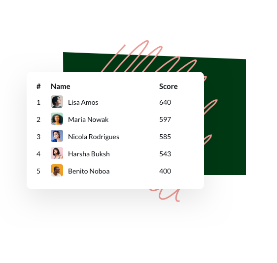

Challenge your team to make small, sustainable choices at work.
Greenlist is a simple internal tool that empowers companies to start a sustainable office lifestyle while driving change in a way that feels natural. With both a fun and inspiring approach, Greenlist turns cutting down on plastic into a friendly in-company competition that celebrates individuals for their efforts.
Create a cleaner and
better world, on Slack.
Whether it’s choosing reusable food and liquid containers or picking the vegetarian option for the office lunch, Greenlist allows anyone in your team to set a positive role model and influence other staff in being more cautious about plastic pollution and using resources sustainably.
Educate employees
Thanks to a point system based on the environmental impact of each action, Greenlist helps you educate your employees on sustainability while keeping them engaged.
Drive engagement
Discover week by week how well your team is doing and which employee will get to the top of the monthly Green Leaderboard!
Celebrate achievements
Celebrate achievements
Greenlist celebrates your employee’s waste reduction achievements by giving custom designed badges so that they feel proud of the quantifiable difference they are making towards the plastic pollution crisis.

.svg)
.png)
.png)
.png)
.png)
.png)